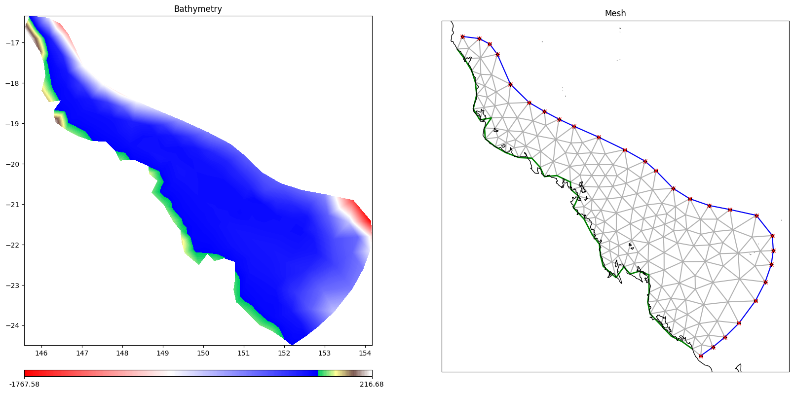
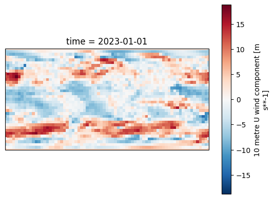
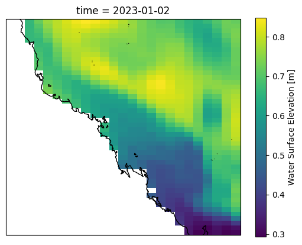
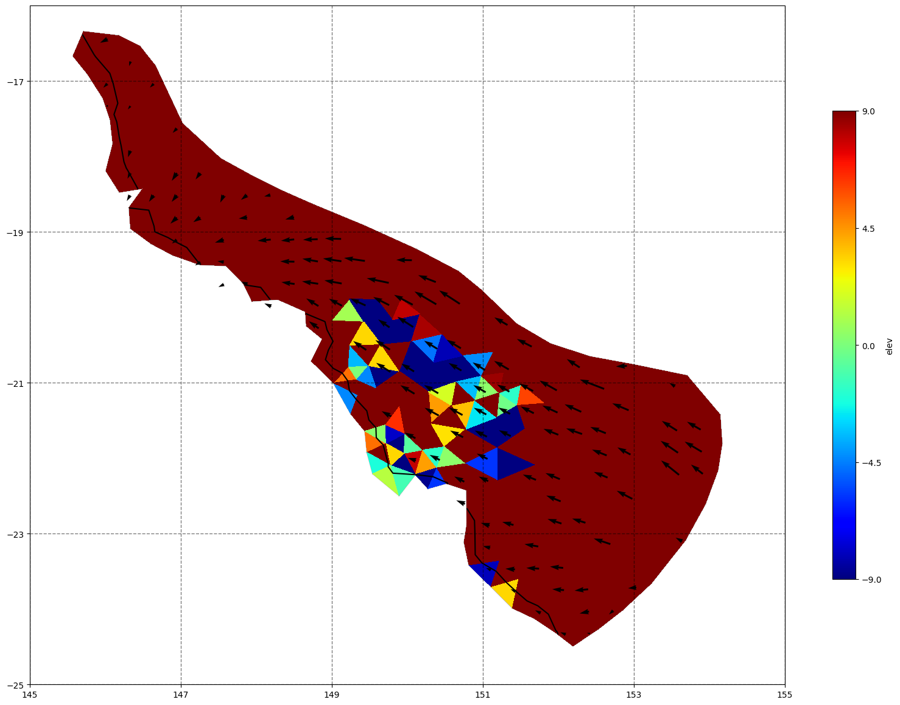
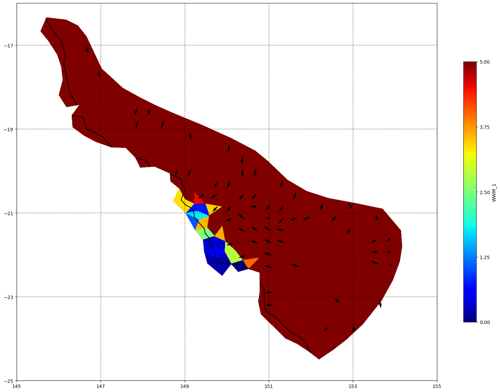

SCHISM procedural example#
In this notebook we will use the SCHOSM grid, config and data objects to define a SCHISM workspace
Frontmatter#
Required inputs and defination of a few helper functions
[64]:
%load_ext autoreload
%autoreload 2
# turn off warnings
import warnings
warnings.filterwarnings('ignore')
import sys
from datetime import datetime
from pathlib import Path
from rompy.core import DataBlob, TimeRange
from shutil import rmtree
import xarray as xr
import numpy as np
import matplotlib.pyplot as plt
import intake
import cartopy.crs as ccrs
import pandas as pd
import logging
logging.basicConfig(level=logging.INFO)
HERE = Path('../../tests/schism')
# Define some useful functions for plotting outputs
from matplotlib.tri import Triangulation
import cartopy.feature as cfeature
#import cartopy.mpl.ticker as cticker
from cartopy.io.shapereader import Reader
from cartopy.feature import ShapelyFeature
from cartopy.mpl.ticker import LongitudeFormatter, LatitudeFormatter
lon_formatter = LongitudeFormatter()
lat_formatter = LatitudeFormatter()
import re
from pyproj import Proj, transform
import pytz
from scipy.spatial import KDTree
from scipy.interpolate import griddata
def schism_load(schfile):
'''
Ron: Load schism output file and parse the element/node values to create a (matplotlib) trimesh object for plotting
Returns xarray dataset and trimesh object
'''
schout = xr.open_dataset(schfile)
elems = np.int32(schout.SCHISM_hgrid_face_nodes[:,:-1]-1)
# Ron: get lat/lon coordinates of nodes - weird it appears x,y are switched
lons = schout.SCHISM_hgrid_node_y.values
lats = schout.SCHISM_hgrid_node_x.values
# create trimesh object
meshtri = Triangulation(lats, lons, triangles=elems)
return schout, meshtri
def schism_plot(schout, meshtri,varname,varscale=[],bbox=[],time=-1,mask=True,
vectors=False, plotmesh=False,project=False,contours=[10,30,50],
pscale=20,cmap=plt.cm.jet):
'''
plot output variable in xarray dataset (schout) using mesh information meshtri.
input:
schout: xarray dataset returned by def schism_load
meshtri: (matplotlib) trimesh object returned by def schism_load
varname: name of data variable in schout
OPTIONAL:
varscale: min/max plotting colour values (defalts to min/max)
bbox: bounding box for plotting [minlon,minlat,maxlon,maxlat] (defalts to data bounds)
time: time to plot (if a variable dimension), can be int (index) or datetime64-like object
plotmesh: plot the grid mesh (elemment boundaries)
project: use a map projection (cartopy, so that e.g. gis data can be added - this is slower
mask: mask out parts of the SCHISM output based on a minumum depth threshold
Returns xarray dataset and
We should modify this to load multiple files ... probably need assistance from DASK
'''
if 'time' in list(schout.dims):
if type(time)==int : # input ts is index
schout=schout.isel(time=time)
else: # assume is datetime64-like object
schout=schout.sel(time=time)
# By default, plot depth contours
# ... I like depth to be z (negative)
z=schout.depth*-1
if np.mean(contours)>0:
contours = np.flip(-1*np.asarray(contours))
else:
contours = np.asarray(contours)
if varname=='depth' or varname=='z':
var = z
else:
var=schout[varname]
if len(varscale)==0:
vmin=var.min()
vmax=var.max()
else:
vmin,vmax=varscale
if project:
x,y = meshtri.x,meshtri.y
fig, ax = plt.subplots(1, 1, figsize=(pscale,pscale),
subplot_kw={'projection': ccrs.PlateCarree()})
if len(bbox)==4:
ax.set_extent([bbox[0], bbox[2], bbox[1], bbox[3]], ccrs.PlateCarree())
else:
bbox=[x.min(),y.min(),x.max(),y.max()]
else:
fig, ax = plt.subplots(1, 1, figsize=(30,30))
if plotmesh:
ax.triplot(meshtri, color='k', alpha=0.3)
### MASKING ** doesnt work with tripcolor, must use tricontouf ###############################
# mask all places in the grid where depth is greater than elev (i.e. are "dry") by threshold below
if mask:
# temp=var.values
# threshold of + 0.05 seems pretty good *** But do we want to use the minimum depth
# defined in the SCHISM input (H0) and in output schout.minimum_depth
# bad_idx= schout.elev.values+schout.depth.values<0.05
bad_idx= schout.elev.values+schout.depth.values < schout.minimum_depth.values
# new way
mask = np.all(np.where(bad_idx[meshtri.triangles], True, False), axis=1)
meshtri.set_mask(mask)
extend='neither'
if (var.min()<vmin) & (var.max()>vmax):
extend='both'
elif var.min()<vmin:
extend='min'
elif var.max()>vmax:
extend='max'
cax = ax.tricontourf(meshtri, var, cmap=cmap,levels=np.linspace(vmin, vmax, 50), extend=extend)
#no mask#############################################################
else:
cax = ax.tripcolor(meshtri, var, cmap=cmap, vmin=vmin, vmax=vmax)
# quiver variables if asked
if vectors:
if re.search('WWM',varname):
vtype='waves'
else:
vtype='currents'
LonI,LatI,UI,VI=schism_calculate_vectors(ax, schout, vtype=vtype)
ax.quiver(LonI,LatI,UI,VI, color='k')
con = ax.tricontour(meshtri, z, contours, colors='k')
# ax.clabel(con, con.levels, inline=True, fmt='%i', fontsize=12)
if not(project):
ax.set_aspect('equal')
else:
# draw lat/lon grid lines every n degrees.
# n = (max(lat)-min(lat))/8
n = (bbox[2]-bbox[0])/5
for fac in [1,10,100]:
nr = np.round(n*fac)/fac
if nr>0:
n=nr
xticks = np.arange(np.round(bbox[0]*fac)/fac,np.round(bbox[2]*fac)/fac+n,n)
yticks = np.arange(np.round(bbox[1]*fac)/fac,np.round(bbox[3]*fac)/fac+n,n)
break
# ax.set_xticks(xticks, crs=ccrs.PlateCarree()
ax.set_xticks(xticks)
# ax.set_xticklabels(np.arange(np.round(min(x)),np.round(max(x)),n))
# ax.set_yticks(yticks, crs=ccrs.PlateCarree()
ax.set_yticks(yticks)
# ax.set_yticklabels(np.arange(np.round(min(y)),np.round(max(y)),n))
ax.yaxis.tick_left()
#lon_formatter = cticker.LongitudeFormatter()
#lat_formatter = cticker.LatitudeFormatter()
# New versions of marplotlib throw warnings on this - does it matter
# ax.xaxis.set_major_formatter(lon_formatter)
# ax.yaxis.set_major_formatter(lat_formatter)
#ax.set_xticks(lon_formatter)
#ax.set_yticks(lat_formatter)
ax.grid(linewidth=1, color='black', alpha=0.5, linestyle='--')
ax.add_feature(cfeature.BORDERS, linewidth=2)
if len(bbox)==4:
ax.set_ylim(bbox[1], bbox[3])
ax.set_xlim(bbox[0], bbox[2])
cbar = plt.colorbar(mappable=cax,shrink=0.5)
cbar.set_ticks(np.round(np.linspace(vmin,vmax,5)*100)/100)
cbar.set_label(varname)
return ax
#Nautical convention
def pol2cart2(rho, deg):
x, y = pol2cart(rho, deg/180.*np.pi)
return y, x
# Cartesian convention
def pol2cart(rho, phi):
x = rho * np.cos(phi)
y = rho * np.sin(phi)
return x, y
def schism_calculate_vectors(ax, schout, vtype='waves', dX='auto', mask=True):
pUTM55 = Proj('epsg:32755')
# pWGS84 = Proj('epsg:4326')
if vtype=='waves':
idx=(schout.WWM_1>0.05) & (schout.elev-schout.depth<0.1)
dp=schout.WWM_18[idx]
# hs=schout.WWM_1[idx]
hs=np.ones(dp.shape)
[u,v] = pol2cart2(hs, np.mod(dp+180, 360))
elif vtype=='elev'or re.search('curr',vtype):
idx=np.sqrt(schout.dahv[:,0]**2+schout.dahv[:,1]**2)>0.01
u = schout.dahv[idx,0]
v = schout.dahv[idx,1] #dahv has u and v components, so use index of 1 for v and index of 0 for u
else:
print('*** Warning input vecter data not understood')
x,y = pUTM55(schout.SCHISM_hgrid_node_x.values[idx],schout.SCHISM_hgrid_node_y.values[idx])
xlim,ylim=pUTM55(ax.get_xlim(),ax.get_ylim())
# might have to play with this - we assume a total of 100 arrows a side will be pleasing
if dX=='auto':
n=30
dX = np.ceil((ylim[1]-ylim[0])/n)
xi = np.arange(xlim[0],xlim[1]+dX,dX)
yi = np.arange(ylim[0],ylim[1]+dX,dX)
XI,YI = np.meshgrid(xi,yi)
UI = griddata((x,y),u,(XI,YI),method='linear')
VI = griddata((x,y),v,(XI,YI),method='linear')
# Create a mask so that place with very little data are removed
if mask:
xbins = np.arange(xlim[0],xlim[1]+2*dX,dX)
ybins = np.arange(ylim[0],ylim[1]+2*dX,dX)
densityH,_,_ = np.histogram2d(x, y, bins=[xbins,ybins])
densityH=densityH.T
# might want to adjust this...
idx=densityH<1
UI[idx]=np.NaN
VI[idx]=np.NaN
LonI,LatI = pUTM55(XI,YI, inverse=True)
return LonI,LatI,UI,VI
The autoreload extension is already loaded. To reload it, use:
%reload_ext autoreload
Workspace basepath#
[65]:
workdir = Path("schism_procedural")
if workdir.exists():
rmtree(workdir)
workdir.mkdir(exist_ok=True)
Model Grid#
[66]:
# Grid object
from rompy.schism import Inputs, SCHISMGrid
#SCHISMGrid?
# Medium sized grid, will run one day in about 3 minutes on 48 cores
# hgrid = HERE / "test_data" / "hgrid.gr3"
# Fast running grid, will run in about 1 minute on 4 cores
hgrid = HERE / "test_data" / "hgrid_20kmto60km_rompyschism_testing.gr3"
grid=SCHISMGrid(
hgrid=DataBlob(id="hgrid", source=hgrid),
drag=1,
)
grid.plot_hgrid()
WARNING:rompy.schism.grid:drag is being set to a constant value, this is not recommended. For best results, please supply friction gr3 files with spatially varying values. Further options are under development.

[4]:
grid.get(workdir)
list(workdir.glob('*'))
INFO:rompy.schism.grid:Generated albedo with constant value of 0.15
INFO:rompy.schism.grid:Generated diffmin with constant value of 1e-06
INFO:rompy.schism.grid:Generated diffmax with constant value of 1.0
INFO:rompy.schism.grid:Generated watertype with constant value of 1.0
INFO:rompy.schism.grid:Generated windrot_geo2proj with constant value of 0.0
INFO:rompy.schism.grid:Generated drag with constant value of 1.0
INFO:rompy.schism.grid:Linking hgrid.gr3 to schism_procedural/hgrid.ll
INFO:rompy.schism.grid:Linking hgrid.gr3 to schism_procedural/hgrid_WWM.gr3
[4]:
[PosixPath('schism_procedural/hgrid.gr3'),
PosixPath('schism_procedural/hgrid.ll'),
PosixPath('schism_procedural/diffmin.gr3'),
PosixPath('schism_procedural/watertype.gr3'),
PosixPath('schism_procedural/vgrid.in'),
PosixPath('schism_procedural/albedo.gr3'),
PosixPath('schism_procedural/windrot_geo2proj.gr3'),
PosixPath('schism_procedural/wwmbnd.gr3'),
PosixPath('schism_procedural/diffmax.gr3'),
PosixPath('schism_procedural/drag.gr3'),
PosixPath('schism_procedural/hgrid_WWM.gr3'),
PosixPath('schism_procedural/tvd.prop')]
Forcing data#
[5]:
# First lists import the main data classes
from rompy.schism.data import SCHISMDataSflux, SCHISMDataOcean, SCHISMDataWave, SCHISMDataTides
# Sets also import a few of the minor classes that are used in the construction of these main classes for use in this demo
from rompy.schism.data import SfluxSource, TidalDataset, SfluxAir, SCHISMDataBoundary
# And also lets import some of the core data source objects. These are data input abstractions that work in exactly the same way as
# with the swan classes, and can be used interchangeably in each of the data classes depending on the data source. We will use a
# bit of a mix here for illustration purposes.
from rompy.core.data import DataBlob, SourceFile, SourceDataset, SourceIntake, SourceDatamesh
from rompy.core.boundary import SourceWavespectra
Sflux Data#
[6]:
from rompy.schism.namelists import Sflux_Inputs
# SCHISMDataSflux??
# SfluxSource??
# Sflux_Inputs??
[7]:
import intake
cat = intake.open_catalog(HERE / ".." / "data" / "catalog.yaml")
ds = cat.era5.to_dask()
ax = plt.axes(projection=ccrs.PlateCarree())
ds.u10[0].plot(ax=ax, transform=ccrs.PlateCarree(), cmap="RdBu_r")
[7]:
<cartopy.mpl.geocollection.GeoQuadMesh at 0x7f95f3f44690>

[8]:
# Lets have a look at an flux object. Here we will use a ERA5 dataset exposed through the intake catalog in the tests/data folder.
from rompy.core.time import TimeRange
atmos_forcing = SCHISMDataSflux(
air_1=SfluxAir(
id="air_1",
source=SourceIntake(
dataset_id="era5",
catalog_uri=HERE / ".." / "data" / "catalog.yaml",
),
filter={
"sort": {"coords": ["latitude"]},
},
buffer=2
)
)
atmos_forcing.get(destdir=workdir, grid=grid, time=TimeRange(start="2023-01-01", end="2023-01-02", dt=3600))
INFO:rompy.schism.data:Fetching air_1
[9]:
list(workdir.glob('**/*'))
[9]:
[PosixPath('schism_procedural/hgrid.gr3'),
PosixPath('schism_procedural/hgrid.ll'),
PosixPath('schism_procedural/diffmin.gr3'),
PosixPath('schism_procedural/watertype.gr3'),
PosixPath('schism_procedural/vgrid.in'),
PosixPath('schism_procedural/albedo.gr3'),
PosixPath('schism_procedural/sflux'),
PosixPath('schism_procedural/windrot_geo2proj.gr3'),
PosixPath('schism_procedural/wwmbnd.gr3'),
PosixPath('schism_procedural/diffmax.gr3'),
PosixPath('schism_procedural/drag.gr3'),
PosixPath('schism_procedural/hgrid_WWM.gr3'),
PosixPath('schism_procedural/tvd.prop'),
PosixPath('schism_procedural/sflux/air_1.0001.nc'),
PosixPath('schism_procedural/sflux/sflux_inputs.txt')]
[10]:
# Create a map
ax = plt.axes(projection=ccrs.PlateCarree())
# load the data
ds = xr.open_dataset("schism_procedural/sflux/air_1.0001.nc")
wind_speed = np.sqrt(ds.u10**2 + ds.v10**2)
# plot the data
wind_speed.isel(time=2).plot(ax=ax, transform=ccrs.PlateCarree())
[10]:
<cartopy.mpl.geocollection.GeoQuadMesh at 0x7f95ec7c2010>

Ocean Boundary#
[11]:
#SCHISMDataOcean??
[12]:
ds = xr.open_dataset(HERE / "test_data" / "hycom.nc")
ax = plt.axes(projection=ccrs.PlateCarree())
ds["surf_el"].isel(time=0).plot(ax=ax, transform=ccrs.PlateCarree())
ax.coastlines()
[12]:
<cartopy.mpl.feature_artist.FeatureArtist at 0x7f95ec7f6550>

[13]:
ocean_forcing = SCHISMDataOcean(
elev2D = SCHISMDataBoundary(
id="hycom",
source=SourceFile(
uri=HERE / "test_data" / "hycom.nc",
),
variable="surf_el",
coords={"t": "time", "y": "ylat", "x": "xlon", "z": "depth"},
interpolate_missing_coastal=True,
),
)
[14]:
ocean_forcing.get(destdir=workdir, grid=grid)
list(workdir.glob("*"))
INFO:rompy.schism.data:Fetching elev2D
[14]:
[PosixPath('schism_procedural/hgrid.gr3'),
PosixPath('schism_procedural/hgrid.ll'),
PosixPath('schism_procedural/diffmin.gr3'),
PosixPath('schism_procedural/watertype.gr3'),
PosixPath('schism_procedural/vgrid.in'),
PosixPath('schism_procedural/albedo.gr3'),
PosixPath('schism_procedural/sflux'),
PosixPath('schism_procedural/windrot_geo2proj.gr3'),
PosixPath('schism_procedural/wwmbnd.gr3'),
PosixPath('schism_procedural/diffmax.gr3'),
PosixPath('schism_procedural/elev2D.th.nc'),
PosixPath('schism_procedural/drag.gr3'),
PosixPath('schism_procedural/hgrid_WWM.gr3'),
PosixPath('schism_procedural/tvd.prop')]
[15]:
dsb = xr.open_dataset('schism_procedural/elev2D.th.nc')
dsb.time[0]
[15]:
<xarray.DataArray 'time' ()>
array('2023-01-01T00:00:00.000000000', dtype='datetime64[ns]')
Coordinates:
time datetime64[ns] 2023-01-01
Attributes:
long_name: Time
standard_name: time
base_date: [2023 1 1 0 0 0][16]:
vmin, vmax = 0.3, 0.9
time = dsb.time[0]
ax = plt.axes(projection=ccrs.PlateCarree())
ds["surf_el"].sel(time=time).plot(ax=ax, transform=ccrs.PlateCarree(), vmin=vmin, vmax=vmax)
ax.coastlines()
values = dsb.time_series.isel(time=0)
x,y = grid.boundary_points()
ax.scatter(x, y, transform=ccrs.PlateCarree(), c=values, cmap="viridis", vmin=vmin, vmax=vmax, edgecolor="black")
# Check for nans (there shouldn't be any)
# nans = dsb.time_series.isel(time=0).isnull().squeeze()
# ax.scatter(x[nans], y[nans], transform=ccrs.PlateCarree(), c="red", edgecolor="black")
[16]:
<matplotlib.collections.PathCollection at 0x7f95f3f47510>

Wave#
[17]:
# SCHISMDataWave??
[18]:
wave_forcing = SCHISMDataWave(
id="wavedata",
source=SourceIntake(
dataset_id="ausspec",
catalog_uri=HERE / ".." / "data" / "catalog.yaml",
),
coords={'x': "lon", 'y': "lat"},
)
[19]:
ax = wave_forcing.plot(model_grid=grid)
wave_forcing.plot_boundary(ax=ax, grid=grid)
[19]:
<GeoAxes: >
Tidal data#
[20]:
# SCHISMDataTides?
# TidalDataset?
[21]:
tidal_forcing = SCHISMDataTides(
tidal_data=TidalDataset(
elevations=HERE / "test_data"/ "tpxo9-test" / "h_m2s2n2.nc",
velocities=HERE / "test_data"/ "tpxo9-test" / "u_m2s2n2.nc"
),
constituents=["M2", "S2", "N2"],
)
tidal_forcing.get(
destdir=workdir,
grid=grid,
time=TimeRange(start="2023-01-01", end="2023-01-02", dt=3600),
)
INFO:rompy.schism.data:Generating tides
INFO:pyschism.forcing.bctides.bctides:Processing boundary 1:
INFO:pyschism.forcing.bctides.bctides:Elevation type: 5
WARNING:pyschism.forcing.bctides.bctides:Combination of 3 and 4, time history of elevation is read in from elev2D.th.nc!
INFO:pyschism.forcing.bctides.tpxo:Querying TPXO for elevation constituent M2.
INFO:pyschism.forcing.bctides.tpxo:Querying TPXO for elevation constituent S2.
INFO:pyschism.forcing.bctides.tpxo:Querying TPXO for elevation constituent N2.
INFO:pyschism.forcing.bctides.bctides:Velocity type: 3
INFO:pyschism.forcing.bctides.tpxo:Querying TPXO for velocity constituent M2.
INFO:pyschism.forcing.bctides.tpxo:Querying TPXO for velocity constituent S2.
INFO:pyschism.forcing.bctides.tpxo:Querying TPXO for velocity constituent N2.
INFO:pyschism.forcing.bctides.bctides:Temperature type: 0
WARNING:pyschism.forcing.bctides.bctides:Temperature is not sepcified, not input needed!
INFO:pyschism.forcing.bctides.bctides:Salinity type: 0
INFO:pyschism.forcing.bctides.bctides:Salinity is not sepcified, not input needed!
Full config object#
[22]:
# Instantiate a config object
from rompy.schism import SchismCSIROConfig
from rompy.schism.data import SCHISMData
from pydantic import ValidationError
try:
config=SchismCSIROConfig(
grid=grid,
data=SCHISMData(
atmos=atmos_forcing,
ocean=ocean_forcing,
wave=wave_forcing,
tides=tidal_forcing
),
)
except ValidationError as e:
print(e)
1 validation error for SchismCSIROConfig
Value error, manning.gr3 must be specified when nchi=-1 [type=value_error, input_value={'grid': SCHISMGrid([152....], sobc=[1], relax=[]))}, input_type=dict]
For further information visit https://errors.pydantic.dev/2.5/v/value_error
[23]:
# That gives us an expected error due to teh fact that we have a validator checking required inputs
# Lets fix the grid issue and try again
try:
config=SchismCSIROConfig(
grid=grid,
data=SCHISMData(
atmos=atmos_forcing,
ocean=ocean_forcing,
wave=wave_forcing,
tides=tidal_forcing
),
)
except ValidationError as e:
print(e)
# Again we get a validation error, the hgrid_WWM is missing. Lets add it and try again
grid=SCHISMGrid(
hgrid=DataBlob(id="hgrid", source=hgrid),
manning=1,
)
config=SchismCSIROConfig(
grid=grid,
mesbf=1,
fricc=0.067,
data=SCHISMData(
atmos=atmos_forcing,
ocean=ocean_forcing,
wave=wave_forcing,
tides=tidal_forcing
),
)
WARNING:rompy.schism.grid:manning is being set to a constant value, this is not recommended. For best results, please supply friction gr3 files with spatially varying values. Further options are under development.
1 validation error for SchismCSIROConfig
Value error, manning.gr3 must be specified when nchi=-1 [type=value_error, input_value={'grid': SCHISMGrid([152....], sobc=[1], relax=[]))}, input_type=dict]
For further information visit https://errors.pydantic.dev/2.5/v/value_error
Model Run#
Note that most fields are optional, this eample using defaults values.
Generate workspace#
[26]:
if workdir.exists():
rmtree(workdir)
workdir.mkdir(exist_ok=True)
from rompy.model import ModelRun
from rompy.schism import SchismCSIROConfig
run = ModelRun(
run_id="test_schism",
period=TimeRange(start=datetime(2023, 1, 1, 0), end=datetime(2023, 1, 1, 12), interval="1h"),
output_dir=str(workdir),
config=config
)
rundir = run()
INFO:rompy.model:
INFO:rompy.model:-----------------------------------------------------
INFO:rompy.model:Model settings:
INFO:rompy.model:
run_id: test_schism
period:
Start: 2023-01-01 00:00:00
End: 2023-01-01 12:00:00
Duration: 12:00:00
Interval: 1:00:00
Include End: True
output_dir: schism_procedural
config: <class 'rompy.schism.config.SchismCSIROConfig'>
INFO:rompy.model:-----------------------------------------------------
INFO:rompy.model:Generating model input files in schism_procedural
INFO:rompy.schism.grid:Generated albedo with constant value of 0.15
INFO:rompy.schism.grid:Generated diffmin with constant value of 1e-06
INFO:rompy.schism.grid:Generated diffmax with constant value of 1.0
INFO:rompy.schism.grid:Generated watertype with constant value of 1.0
INFO:rompy.schism.grid:Generated windrot_geo2proj with constant value of 0.0
INFO:rompy.schism.grid:Generated manning with constant value of 1.0
INFO:rompy.schism.grid:Linking hgrid.gr3 to schism_procedural/test_schism/hgrid.ll
INFO:rompy.schism.grid:Linking hgrid.gr3 to schism_procedural/test_schism/hgrid_WWM.gr3
INFO:rompy.schism.data:Fetching air_1
INFO:rompy.schism.data:Fetching elev2D
INFO:rompy.schism.data:Fetching wavedata
INFO:rompy.schism.data:Generating tides
INFO:pyschism.forcing.bctides.bctides:Processing boundary 1:
INFO:pyschism.forcing.bctides.bctides:Elevation type: 5
WARNING:pyschism.forcing.bctides.bctides:Combination of 3 and 4, time history of elevation is read in from elev2D.th.nc!
INFO:pyschism.forcing.bctides.tpxo:Querying TPXO for elevation constituent M2.
INFO:pyschism.forcing.bctides.tpxo:Querying TPXO for elevation constituent S2.
INFO:pyschism.forcing.bctides.tpxo:Querying TPXO for elevation constituent N2.
INFO:pyschism.forcing.bctides.bctides:Velocity type: 3
INFO:pyschism.forcing.bctides.tpxo:Querying TPXO for velocity constituent M2.
INFO:pyschism.forcing.bctides.tpxo:Querying TPXO for velocity constituent S2.
INFO:pyschism.forcing.bctides.tpxo:Querying TPXO for velocity constituent N2.
INFO:pyschism.forcing.bctides.bctides:Temperature type: 0
WARNING:pyschism.forcing.bctides.bctides:Temperature is not sepcified, not input needed!
INFO:pyschism.forcing.bctides.bctides:Salinity type: 0
INFO:pyschism.forcing.bctides.bctides:Salinity is not sepcified, not input needed!
INFO:rompy.model:
INFO:rompy.model:Successfully generated project in schism_procedural
INFO:rompy.model:-----------------------------------------------------
Run schism#
(Note that paths to schism binaries will have to be updated)
[27]:
# Run the model
!cd schism_procedural/test_schism && mpirun -np 4 /source/schism/src/_VL_WWM 1
[28]:
# Combine outputs
!cd schism_procedural/test_schism/outputs && /source/schism/src/Utility/Combining_Scripts/combine_output11.exe -b 1 -e 1
Begin: 1, End: 1, dry flag: 0
combine all variables
Check results#
[50]:
list(Path(f"{rundir}/outputs").glob("*"))
[50]:
[PosixPath('/source/rompy/notebooks/schism/schism_procedural/test_schism/outputs/JCG.out'),
PosixPath('/source/rompy/notebooks/schism/schism_procedural/test_schism/outputs/maxdahv_0001'),
PosixPath('/source/rompy/notebooks/schism/schism_procedural/test_schism/outputs/maxdahv_0003'),
PosixPath('/source/rompy/notebooks/schism/schism_procedural/test_schism/outputs/local_to_global_0000'),
PosixPath('/source/rompy/notebooks/schism/schism_procedural/test_schism/outputs/local_to_global_0003'),
PosixPath('/source/rompy/notebooks/schism/schism_procedural/test_schism/outputs/schout_0000_1.nc'),
PosixPath('/source/rompy/notebooks/schism/schism_procedural/test_schism/outputs/maxelev_0000'),
PosixPath('/source/rompy/notebooks/schism/schism_procedural/test_schism/outputs/subcycling.out'),
PosixPath('/source/rompy/notebooks/schism/schism_procedural/test_schism/outputs/maxelev_0003'),
PosixPath('/source/rompy/notebooks/schism/schism_procedural/test_schism/outputs/local_to_global_0002'),
PosixPath('/source/rompy/notebooks/schism/schism_procedural/test_schism/outputs/flux.out'),
PosixPath('/source/rompy/notebooks/schism/schism_procedural/test_schism/outputs/schout_0001_1.nc'),
PosixPath('/source/rompy/notebooks/schism/schism_procedural/test_schism/outputs/maxelev_0001'),
PosixPath('/source/rompy/notebooks/schism/schism_procedural/test_schism/outputs/nonfatal_0001'),
PosixPath('/source/rompy/notebooks/schism/schism_procedural/test_schism/outputs/param.out.nml'),
PosixPath('/source/rompy/notebooks/schism/schism_procedural/test_schism/outputs/nonfatal_0000'),
PosixPath('/source/rompy/notebooks/schism/schism_procedural/test_schism/outputs/maxdahv_0002'),
PosixPath('/source/rompy/notebooks/schism/schism_procedural/test_schism/outputs/total.out'),
PosixPath('/source/rompy/notebooks/schism/schism_procedural/test_schism/outputs/fatal.error'),
PosixPath('/source/rompy/notebooks/schism/schism_procedural/test_schism/outputs/nonfatal_0003'),
PosixPath('/source/rompy/notebooks/schism/schism_procedural/test_schism/outputs/maxdahv_0000'),
PosixPath('/source/rompy/notebooks/schism/schism_procedural/test_schism/outputs/local_to_global_0001'),
PosixPath('/source/rompy/notebooks/schism/schism_procedural/test_schism/outputs/nonfatal_0002'),
PosixPath('/source/rompy/notebooks/schism/schism_procedural/test_schism/outputs/coriolis.out'),
PosixPath('/source/rompy/notebooks/schism/schism_procedural/test_schism/outputs/mirror.out'),
PosixPath('/source/rompy/notebooks/schism/schism_procedural/test_schism/outputs/total_TR.out'),
PosixPath('/source/rompy/notebooks/schism/schism_procedural/test_schism/outputs/schout_1.nc'),
PosixPath('/source/rompy/notebooks/schism/schism_procedural/test_schism/outputs/global_to_local.prop'),
PosixPath('/source/rompy/notebooks/schism/schism_procedural/test_schism/outputs/schout_0002_1.nc'),
PosixPath('/source/rompy/notebooks/schism/schism_procedural/test_schism/outputs/readme.md'),
PosixPath('/source/rompy/notebooks/schism/schism_procedural/test_schism/outputs/schout_0003_1.nc'),
PosixPath('/source/rompy/notebooks/schism/schism_procedural/test_schism/outputs/maxelev_0002')]
[29]:
#load schism files
schfile=('schism_procedural/test_schism/outputs/schout_1.nc')
schout,meshtri=schism_load(schfile)
lons = schout.SCHISM_hgrid_node_y.values
lats = schout.SCHISM_hgrid_node_x.values
schout
[29]:
<xarray.Dataset>
Dimensions: (time: 12, one: 1, nSCHISM_hgrid_face: 317,
nMaxSCHISM_hgrid_face_nodes: 4,
nSCHISM_hgrid_edge: 508, two: 2,
nSCHISM_hgrid_node: 192, sigma: 2,
nSCHISM_vgrid_layers: 2)
Coordinates:
* time (time) datetime64[ns] 2023-01-01T01:00:00 ... 20...
* sigma (sigma) float32 -1.0 0.0
Dimensions without coordinates: one, nSCHISM_hgrid_face,
nMaxSCHISM_hgrid_face_nodes,
nSCHISM_hgrid_edge, two, nSCHISM_hgrid_node,
nSCHISM_vgrid_layers
Data variables: (12/34)
SCHISM_hgrid (one) int32 ...
SCHISM_hgrid_face_nodes (nSCHISM_hgrid_face, nMaxSCHISM_hgrid_face_nodes) float64 ...
SCHISM_hgrid_edge_nodes (nSCHISM_hgrid_edge, two) int32 ...
SCHISM_hgrid_node_x (nSCHISM_hgrid_node) float64 152.2 152.0 ... 145.6
SCHISM_hgrid_node_y (nSCHISM_hgrid_node) float64 -24.49 ... -16.67
node_bottom_index (nSCHISM_hgrid_node) int32 ...
... ...
WWM_2 (time, nSCHISM_hgrid_node) float32 ...
WWM_10 (time, nSCHISM_hgrid_node) float32 ...
WWM_11 (time, nSCHISM_hgrid_node) float32 ...
WWM_18 (time, nSCHISM_hgrid_node) float32 ...
WWM_19 (time, nSCHISM_hgrid_node) float32 ...
WWM_20 (time, nSCHISM_hgrid_node) float32 ...
Attributes:
Conventions: CF-1.0, UGRID-1.0
title: SCHISM Model output
institution: SCHISM Model output
source: SCHISM model output version v10
references: http://ccrm.vims.edu/schismweb/
history: created by combine_output11
comment: SCHISM Model output
type: SCHISM Model output
VisIT_plugin: https://schism.water.ca.gov/library/-/document_library/vie...[52]:
# plot gridded fields - elevation
for ix, time in enumerate(schout.time[5:8].values):
#fig = plt.figure(facecolor='w', figsize=(5,4))
ax = fig.add_subplot(111)
ax.annotate(pd.to_datetime(time).strftime('%d-%b-%Y %H:00'), fontsize=14,
xy=(lons.min()+0.0005,lats.max()-0.0002), xycoords='data')
cax=schism_plot(schout, meshtri,'elev', bbox=[145,-25,155,-16], project=True, plotmesh=True, mask=False,
vectors=True, varscale=(-9,9),contours=[0])
ax.tick_params( axis = 'both', which ='major', labelsize = 24)
fig.subplots_adjust(left=0.05, bottom=0.07, right=0.96, top=0.93)
#figname = '/path_to_your_dir/elev_%02d.png'%ix
plt.show()
plt.close()



[40]:
# plot gridded fields - Hs
for ix, time in enumerate(schout.time[5:8].values):
#fig = plt.figure(facecolor='w', figsize=(5,4))
ax = fig.add_subplot(111)
ax.annotate(pd.to_datetime(time).strftime('%d-%b-%Y %H:00'), fontsize=14,
xy=(lons.min()+0.0005,lats.max()-0.0002), xycoords='data')
cax=schism_plot(schout, meshtri,'WWM_1', bbox=[145,-25,155,-16], project=True, plotmesh=True, mask=False,
vectors=True, varscale=(0,5),contours=[0])
ax.tick_params( axis = 'both', which ='major', labelsize = 24)
fig.subplots_adjust(left=0.05, bottom=0.07, right=0.96, top=0.93)
#figname = '/path_to_your_dir/Hs_%02d.png'%ix
plt.show()
plt.close()



[ ]:
# The full model can be dumped to a configuration file.
import yaml
# dump full model to yaml
with open('model.yaml', 'w') as f:
yaml.dump(run.model_dump(), f)
[ ]:
!cat model.yaml
config:
CGPP: F
CPP: F
DM: T
DPEAK: T
DSPR: T
HS: T
KPP: F
LPP: F
ORBITAL: F
PEAKD: T
PEAKDSPR: T
TM01: T
TM02: F
TPP: T
TPPD: T
UBOT: F
WNPP: F
ac: T
brcrYN: ''
checkout: main
currYN: '!'
data:
atmos:
air_1:
buffer: 2.0
coords:
t: time
x: longitude
y: latitude
z: depth
crop_data: true
data_type: sflux_air
fail_if_missing: true
filter:
crop:
latitude:
start: -26.4884499831
stop: -14.343982374700001
longitude:
start: 143.572275673
stop: 156.1662613999
time:
start: &id001 2023-01-01 00:00:00
stop: 2023-01-02 06:00:00
derived: {}
rename: {}
sort:
coords:
- latitude
subset: {}
timenorm: {}
id: air_1
max_window_hours: 120.0
model_type: data_grid
prmsl_name: mslp
relative_weight: 1.0
source:
catalog_uri: !!python/object/apply:pathlib.PosixPath
- ..
- ..
- tests
- schism
- ..
- data
- catalog.yaml
dataset_id: era5
kwargs: {}
model_type: intake
spfh_name: spfh
stmp_name: stmp
time_buffer:
- 0
- 1
uwind_name: u10
variables: []
vwind_name: v10
air_2: null
data_type: sflux
prc_1: null
prc_2: null
rad_1: null
rad_2: null
data_type: schism
ocean:
SAL_3D: null
TEM_3D: null
data_type: ocean
elev2D:
buffer: 0.0
coords:
t: time
x: xlon
y: ylat
z: depth
crop_data: true
data_type: boundary
filter:
crop:
time:
start: *id001
stop: 2023-01-03 00:00:00
derived: {}
rename: {}
sort: {}
subset: {}
timenorm: {}
id: elev2D
interpolate_missing_coastal: true
model_type: data_grid
sel_method: interp
sel_method_kwargs: {}
source:
kwargs: {}
model_type: open_dataset
uri: !!python/object/apply:pathlib.PosixPath
- ..
- ..
- tests
- schism
- test_data
- hycom.nc
spacing: null
time_buffer:
- 0
- 1
variable: surf_el
variables:
- surf_el
uv3D: null
tides:
add_earth_tidal: true
constituents:
- M2
- S2
- N2
cutoff_depth: 50.0
data_type: tide
database: tpxo
ethconst: []
flags:
- - 5
- 3
- 0
- 0
relax: []
sobc:
- 1
sthconst: []
tidal_data:
data_type: tidal_dataset
elevations: !!python/object/apply:pathlib.PosixPath
- ..
- ..
- tests
- schism
- test_data
- tpxo9-test
- h_m2s2n2.nc
velocities: !!python/object/apply:pathlib.PosixPath
- ..
- ..
- tests
- schism
- test_data
- tpxo9-test
- u_m2s2n2.nc
tobc:
- 1
tthconst: []
vthconst: []
wave:
buffer: 0.0
coords:
t: time
x: lon
y: lat
z: depth
crop_data: true
data_type: wave
filter:
crop:
time:
start: *id001
stop: 2023-01-02 06:00:00
derived: {}
rename: {}
sort: {}
subset: {}
timenorm: {}
grid_type: boundary_wave_station
id: wavedata
model_type: data_grid
sel_method: nearest
sel_method_kwargs:
unique: true
source:
catalog_uri: !!python/object/apply:pathlib.PosixPath
- ..
- ..
- tests
- schism
- ..
- data
- catalog.yaml
dataset_id: ausspec
kwargs: {}
model_type: intake
spacing: null
time_buffer:
- 0
- 1
variables: []
definetc: -1
deltc: 360
deltc_out: 3600
dzb_decayYN: '!'
extrap: T
extrapYN: '!'
filewind: wind.dat
fricc: 0.067
grid:
albedo:
crs: epsg:4326
gr3_type: albedo
hgrid:
id: hgrid
model_type: data_blob
source: &id002 !!python/object/apply:pathlib.PosixPath
- ..
- ..
- tests
- schism
- test_data
- hgrid_20kmto60km_rompyschism_testing.gr3
value: 0.15
crs: epsg:4326
diffmax:
crs: epsg:4326
gr3_type: diffmax
hgrid:
id: hgrid
model_type: data_blob
source: *id002
value: 1.0
diffmin:
crs: epsg:4326
gr3_type: diffmin
hgrid:
id: hgrid
model_type: data_blob
source: *id002
value: 1.0e-06
drag: null
grid_type: schism
hgrid:
id: hgrid
model_type: data_blob
source: *id002
hgrid_WWM:
gridtype: hgrid_WWM
hgrid:
id: hgrid
model_type: data_blob
source: *id002
hgridll:
gridtype: hgridll
hgrid:
id: hgrid
model_type: data_blob
source: *id002
manning:
crs: epsg:4326
gr3_type: manning
hgrid:
id: hgrid
model_type: data_blob
source: *id002
value: 1.0
rough: null
vgrid: {}
watertype:
crs: epsg:4326
gr3_type: watertype
hgrid:
id: hgrid
model_type: data_blob
source: *id002
value: 1.0
windrot_geo2proj:
crs: epsg:4326
gr3_type: windrot_geo2proj
hgrid:
id: hgrid
model_type: data_blob
source: *id002
value: 0.0
wwmbnd:
bcflags: null
hgrid:
id: hgrid
model_type: data_blob
source: *id002
x: !!python/object/apply:numpy.core.multiarray._reconstruct
args:
- &id003 !!python/name:numpy.ndarray ''
- !!python/tuple
- 0
- !!binary |
Yg==
state: !!python/tuple
- 1
- !!python/tuple
- 192
- &id004 !!python/object/apply:numpy.dtype
args:
- f8
- false
- true
state: !!python/tuple
- 3
- <
- null
- null
- null
- -1
- -1
- 0
- false
- !!binary |
0P1O8yMGY0CH9g7Pw/5iQGI0e/0B9mJAUKkxKX7sYkAZ/qv8HgdjQOpWxvy4EGNAedEbUgsBY0Ce
8LCWbONiQOtJqyVm+GJAST+k0jXvYkA87/lzF9piQIPnG97uDGNAc5k+JicbY0Ariu5QCdhiQKeA
qR8KBWNAKpRRmR3nYkCjde12mfpiQNdkDPo68WJAFajHKnzgYkB6LDGjhBRjQFqGGRJfJ2NA1cak
PETZYkBpQ/dNvghjQGloxpVA7GJA9TiUafn4YkAuzwjQJeRiQPfc3Zl1AWNAvTEST94dY0DcesH3
wzVjQAl1ZnlFPmNA5rXdfoxDY0AEWr87T7FiQIoTWDN0vGJAQ3sq5LjIYkD4qsGuANliQGXg9DVx
0GJArZZ2lb4QY0A+yeOKj/NiQFBmXKlR5mJAymZvKUYBY0DqFPNJEShjQOfxLOewGWNAmTV/9Fc1
Y0CN4vuvCjpjQAxlbQNSRWNABE/Hwuy4YkC1qxBO5K5iQJyHfKBYw2JAWLTkqYLMYkDJpnAObNhi
QJLuZku/FmNAYuzdT0jmYkBCUceEGwpjQE6PLZB/9mJAF85I1MkmY0AeyJQsyzJjQAyEP6h0RGNA
HelYGoq+YkDjJq4YArdiQN3eCrH+rWJA5LjOJX7GYkDjzYAMo89iQPU8vtDC2GJAiUbQf9PlYkAJ
azmRbRljQNIejKe4DWNAamqqRt7xYkCDgz94EwBjQEVZdsMxImNAJT/t7nw2Y0CNOf0QA6hiQCjX
++HsvmJA9Wrd1cW2YkCBCQz0MbFiQHeM4aADq2JA+Jihj//JYkCoz/35h9JiQJk1xsmL7mJAOKj0
QKHcYkApGuCM3uZiQOr9bEuwEWNAIag0yEcGY0DiEB0G+/liQDt+a4iSFGNA3ZhfA5ofY0Be2Sol
kapiQFubRAipoGJAYTCSjb28YkBMFO/xorJiQFyv0YDmyGJAxODOv13UYkB6S2eXL/BiQMKHgO5s
32JAHrPNPJroYkADs7F37wVjQFNnzcr4+GJAGdQkIHENY0BoPTgzjK9iQJC3iOv5pmJAhPqDMYSg
YkALFBkjV5diQGeqtzDBvGJAvAUy/QLLYkDej2LXstdiQENlDSgl8GJAa0gv9WLkYkC8nb+4nPxi
QKNud/jCtGJA7r9/B5enYkAyoi3ZA5xiQH4e0SuvwWJASBCgeqrOYkB+iv7wVdxiQAX4XqMc7mJA
iuxMp5m5YkBP1z6UZK1iQJx1VX7rn2JAD+i+eDSVYkAaqZi+T8ViQICVwy/00WJA3siiizLfYkCJ
ctbhUL1iQO3h1pIis2JAOJkIwVmnYkBvuGWBG51iQODRPETHlGJAAuE7GKbGYkD/oH9QkNViQJX/
N1jiuWJA35dmOkStYkDs7vskSKFiQO1ZAjIFiWJAwOcsWCd+YkCMymXeNJRiQBjLfBjdw2JADWWD
MROzYkBJztBb36ZiQCsX3CbjmmJAQocb3XFcYkCK4h6aFGRiQI8Idlb0Z2JAAXfYQTdzYkAoSC3K
fHpiQOuujhHohWJAlvC8v3aQYkDurKTwfK1iQMQlfn48n2JA5ey6S0OVYkDKs2Aca1NiQC72yRfl
XGJA3l8sMAVlYkCaXRKHFm5iQFFAQiz1emJAaDUlXA6IYkCNPWq5q5diQHa49CzDVWJAe/KpTbdK
YkBrgf+dpF5iQBVD4xlla2JA0IDBCP53YkDOTfLfZ39iQF3SwvXJimJALYrzwCNTYkAE+nVFB0pi
QEduIPC2WWJAYVsaEpNmYkCuaTkrDXRiQD+u2NkjfmJA4cOAN/lPYkBmUxVm90ViQDiUoXMdU2JA
mtaShNdeYkA+es4UzXBiQMwDJBd9SWJAkv/WCXBMYkA0fTvwPkBiQLNRmug7VGJARfkrqJxgYkDY
TkU+KEpiQMbgjX8xQ2JA8ykhiz1QYkBxkzwTJVViQGILBPTIRmJAMI17hA1CYkDFL3BNlk5iQMzQ
emyCRmJApUa3Cfc+YkD9d0YYjEViQB6vq/1RPGJAHelaZHw4YkBYsSv2vjZiQJt6EhVQMmJA
y: !!python/object/apply:numpy.core.multiarray._reconstruct
args:
- *id003
- !!python/tuple
- 0
- !!binary |
Yg==
state: !!python/tuple
- 1
- !!python/tuple
- 192
- *id004
- false
- !!binary |
cSXfDgt9OMBX13NiZ084wNpMzJaPIDjARZSzDof8N8CdBMKQTTU4wL524tJuRDjA0Al9BlYDOMDR
Tuc5y7M3wIoZNe3PzTfAEqxSBH2YN8DX5m7zoGo3wDlYl00b9jfAYhbpZDoDOMAQZTlbER03wJ2Z
lXOGqjfA8QAt3kpaN8BdD5hjD283wGRDkY8RSzfAB/iItUwVN8AC8NiacJk3wO14XxI4qDfAaccG
vJfeNsCji4XV4y43wBvacHceBjfAhwbRdiYPN8DWUAwHwLg2wOWfmPqSyTbA1oe/L/gcN8AHffEV
eRY3wLErF/UDmzbAj0+dTv8oNsC0M7ucgTQ2wMTstiJpfjbAGeJyItxmNsCdbqKcxGs2wOv9I+N6
VTbA/u2A3JaeNsC2tIywvqE2wD6vjTx9TDbAGhGWPh5xNsBhqL92Ioc2wIp0izVmMjbA2EWi720y
NsAkycd8rdE1wDKfipzAzTXALp3zMMQYNsBwn94Oiew1wKlX3ztQNzbAz0jNZYYgNsCgJcLhaRI2
wOsGjYbz4TXALXc+cXTbNcCM2wJnBBU2wAGc8vJBFjbA/DF/XtfeNcANTOtJeXU1wOtUg7UUbDXA
w1KqKpfvNcAQJ6xk8s01wJBdQnYApDXAnogYi7PjNcC7B0F3JNk1wLFnneKJnTXADnnnc151NcCp
LytSMZo1wHZNFw0RqTXA+gOJ2CWcNcA34shJAa81wMzPUthaRjXAVYwwUtrnNMAmArjFc2k1wGUc
ROcMrDXAmgYbmImONcCgHFgZjFs1wLsuzF7HKDXA7vtPOUiJNcDYKFVlkkw1wOhJJBC5TDXA+rpo
3QE8NcCFMWVJACI1wFbt3vZyUjXAV4htYGljNcDF3ZognEU1wMZvZgmtADXA2LeRPibCNMAusrHT
DvU0wB4M8dZdADXAvMm3y/pONcCse2MFURE1wCoXP1GGHjXANG+uQEH9NMCJer44SgY1wK0VlHr7
6DTA6QZlvmXeNMD4b1oIpAA1wNVLg8+M5DTAxN3rsHqnNMAJkP+LKcY0wNIo61uQyDTAmiJLJQav
NMBII0/sgrY0wCBjgwge2TTA24hosoa7NMAxAi8emqM0wCpABn0xrjTAF1+qVViYNMBLdZD+r3s0
wF5LZLicfDTA6uRIAxGANMAv5Pkabms0wFlxdp8mcjTApogsSx1aNMCStHF9BUE0wCavALWANzTA
uof3aYsqNMD9InxCSi80wIJNyloLKzTAWPVUr+Q+NMAX+i5NmxY0wLVYBYdi8zPAg60rya7EM8D4
us/kcOUzwP3ermfk5DPAyE3jj0jkM8A1dDQJxeAzwC7hdaJJDjTAlPRTDK63M8DknhSIw4UzwGK/
yolNnTPAozlkGjycM8DZYzQ/Np0zwBuLNBWM5DPAZFzK4PzqM8BPF8Ie1agzwMvx/WIsOzPAmYKJ
hBVWM8AED2QhYE8zwBsvLmyFVTPAF2DRxCpOM8B/ii9PMS4zwDMv7pvHbjPAZRhs7M9yM8B3+7yC
pa4zwE/Fo9KchzPAmhEUNnlPM8Cr0D7iEOoywP38xO/QDDPAPLrWRSYPM8B1WsLYxSczwJCykIQu
DDPAkP8Arlb6MsCqunUlYyMzwJSAtNk6RjPAWfyCM/r3MsAYXtectKEywGGrwCQn6zLAN3OmkkP0
MsCUJRVyTr8ywDZ2A2h/xjLAf7nALIfgMsAlJrp7OJwywAH5rtoXdDLAq6Sbqh6wMsAK2ssKyq0y
wLrwdzfsZzLApOdXaKBqMsDzP7Z6gH4ywBuFC826QTLA7Re73xJsMsBE2t+F6HgywMXkD3r9HDLA
ynDRTB0MMsASwRxjBQcywDftXHNrJzLAd3vPU2TkMcDgBAlH1TAywLeLu8nAwTHAZkTH4PGPMcBH
kh3tkZoxwOSeoOgQ1THAYw8/0ClSMcC4bCrTM8wwwCELNShxTzHAe7JpBF6CMcAwiXgJ3IkwwOaY
X5aF5DDA0cJOwl85McCH9V1J5mUwwMEJeQNbpDDAkzq8wULoMMCnvJk6D1gwwEt4/P7YqjDA
h1_bcc: 50.0
h2_bcc: 100.0
h_bcc1: 100.0
ibreak: 1
ibtrack_openbndYN: '!'
ic_elev: 0
icou_elfe_wwm: 1
ihfskip: 720
inv_atm_bnd: 1
iout_sta: 0
iouts: 15
iwbl: 0
iwind_form: 1
iwindoffYN: '!'
limfak: 0.1
lindsprdeg: F
lsourceswam: F
lsp2d: T
mdc2: 36
melim: 1
mesbf: 1
mesin: 1
model_type: schismcsiro
msc2: 36
nchi: -1
nouts: '''AWAC_in'',''AWAC_mid'',''AWAC_off'',''SPOT_1002'',''SPOT_1011'',''SPOT_1018'',''SPOT_1026'''
nstep_wwm: 3
outstyle: NC
project: WAXA
rlatitude: -29
sav_cdYN: '!'
sfea0: -29.0
slam0: 120.0
template: /source/rompy/rompy/templates/schism
thetai: 0.8
time_step: 120.0
utc_start: 0
walvYN: '!'
wbdm: 90
windYN: '!'
wwm1: 1
wwm10: 0
wwm11: 0
wwm12: 0
wwm13: 0
wwm14: 0
wwm15: 0
wwm16: 1
wwm17: 1
wwm18: 1
wwm19: 0
wwm2: 1
wwm20: 0
wwm21: 0
wwm22: 0
wwm23: 0
wwm24: 0
wwm25: 0
wwm26: 0
wwm27: 0
wwm28: 0
wwm29: 0
wwm3: 0
wwm30: 0
wwm31: 0
wwm31YN: '!'
wwm32: 0
wwm32YN: '!'
wwm33: 0
wwm33YN: '!'
wwm34: 0
wwm34YN: '!'
wwm35: 0
wwm35YN: '!'
wwm36: 0
wwm36YN: '!'
wwm37: 0
wwm37YN: '!'
wwm4: 0
wwm5: 0
wwm6: 0
wwm7: 0
wwm8: 1
wwm9: 1
xouts: 115.6208687,115.5941886,115.58077,115.5942931,115.5830497,115.5807825,115.5960683
youts: -32.611605,-32.611605,-32.613682,-32.6253914,-32.6135870,-32.6294226,-32.6096741
output_dir: !!python/object/apply:pathlib.PosixPath
- schism_procedural
period:
duration: !!python/object/apply:datetime.timedelta
- 1
- 0
- 0
end: 2023-01-02 00:00:00
include_end: true
interval: !!python/object/apply:datetime.timedelta
- 0
- 3600
- 0
start: *id001
run_id: test_schism
Running from configuration files.#
The full model dump above looks complex due to the fact that the full model state, including all default value, is written to the model.yaml file. The same model configuration can be achived in a much simpler file by simply specifying non default values. For example, the entire configuration above is specified in the demo.yaml file shown below
[56]:
!cat demo.yaml
output_dir: schism_declaritive
period:
start: 20230101T00
end: 20230101T12
interval: 3600
run_id: test_schism
config:
model_type: schismcsiro
mesbf: 1
fricc: 0.067
grid:
grid_type: schism
hgrid:
id: hgrid
model_type: data_blob
#source: ../../tests/schism/test_data/hgrid.gr3
source: ../../tests/schism/test_data/hgrid_20kmto60km_rompyschism_testing.gr3
manning: 1
data:
data_type: schism
atmos:
air_1:
source:
uri: ../../tests/schism/test_data/atmos.nc
model_type: open_dataset
uwind_name: u10
vwind_name: v10
prml_name: mslp
filter:
sort: {coords: [latitude]}
buffer: 5
ocean:
elev2D:
buffer: 0.0
coords:
t: time
x: xlon
y: ylat
z: depth
source:
uri: ../../tests/schism/test_data/hycom.nc
model_type: open_dataset
variable: surf_el
tides:
constituents:
- M2
- S2
- N2
cutoff_depth: 50.0
flags:
- [5, 3, 0, 0]
tidal_data:
data_type: tidal_dataset
elevations: ../../tests/schism/test_data/tpxo9-neaus/h_m2s2n2.nc
velocities: ../../tests/schism/test_data/tpxo9-neaus/u_m2s2n2.nc
wave:
buffer: 0.0
coords:
t: time
x: lon
y: lat
z: depth
id: wavedata
source:
catalog_uri: ../../tests/data/catalog.yaml
dataset_id: ausspec
model_type: intake
[60]:
# This can be loaded and used to instatiate the model object and run as above, e.g
import yaml
demo_config = yaml.load(open('demo.yaml', 'r'), Loader=yaml.FullLoader)
run = ModelRun(**demo_config)
run()
WARNING:rompy.schism.grid:manning is being set to a constant value, this is not recommended. For best results, please supply friction gr3 files with spatially varying values. Further options are under development.
INFO:rompy.model:
INFO:rompy.model:-----------------------------------------------------
INFO:rompy.model:Model settings:
INFO:rompy.model:
run_id: test_schism
period:
Start: 2023-01-01 00:00:00
End: 2023-01-01 12:00:00
Duration: 12:00:00
Interval: None
Include End: True
output_dir: schism_declaritive
config: <class 'rompy.schism.config.SchismCSIROConfig'>
INFO:rompy.model:-----------------------------------------------------
INFO:rompy.model:Generating model input files in schism_declaritive
INFO:rompy.schism.grid:Generated albedo with constant value of 0.15
INFO:rompy.schism.grid:Generated diffmin with constant value of 1e-06
INFO:rompy.schism.grid:Generated diffmax with constant value of 1.0
INFO:rompy.schism.grid:Generated watertype with constant value of 1.0
INFO:rompy.schism.grid:Generated windrot_geo2proj with constant value of 0.0
INFO:rompy.schism.grid:Generated manning with constant value of 1.0
INFO:rompy.schism.grid:Linking hgrid.gr3 to schism_declaritive/test_schism/hgrid.ll
INFO:rompy.schism.grid:Linking hgrid.gr3 to schism_declaritive/test_schism/hgrid_WWM.gr3
INFO:rompy.schism.data:Fetching air_1
INFO:rompy.schism.data:Fetching elev2D
INFO:rompy.schism.data:Fetching wavedata
INFO:rompy.schism.data:Generating tides
INFO:pyschism.forcing.bctides.bctides:Processing boundary 1:
INFO:pyschism.forcing.bctides.bctides:Elevation type: 5
WARNING:pyschism.forcing.bctides.bctides:Combination of 3 and 4, time history of elevation is read in from elev2D.th.nc!
INFO:pyschism.forcing.bctides.tpxo:Querying TPXO for elevation constituent M2.
INFO:pyschism.forcing.bctides.tpxo:Querying TPXO for elevation constituent S2.
INFO:pyschism.forcing.bctides.tpxo:Querying TPXO for elevation constituent N2.
INFO:pyschism.forcing.bctides.bctides:Velocity type: 3
INFO:pyschism.forcing.bctides.tpxo:Querying TPXO for velocity constituent M2.
INFO:pyschism.forcing.bctides.tpxo:Querying TPXO for velocity constituent S2.
INFO:pyschism.forcing.bctides.tpxo:Querying TPXO for velocity constituent N2.
INFO:pyschism.forcing.bctides.bctides:Temperature type: 0
WARNING:pyschism.forcing.bctides.bctides:Temperature is not sepcified, not input needed!
INFO:pyschism.forcing.bctides.bctides:Salinity type: 0
INFO:pyschism.forcing.bctides.bctides:Salinity is not sepcified, not input needed!
INFO:rompy.model:
INFO:rompy.model:Successfully generated project in schism_declaritive
INFO:rompy.model:-----------------------------------------------------
[60]:
'/source/rompy/notebooks/schism/schism_declaritive/test_schism'
[63]:
# Alternatively, this same config can be run directly using the rompy cli
!rm -fr schism_declaritive #remove previous run
!rompy schism demo.yaml
manning is being set to a constant value, this is not recommended. For best results, please supply friction gr3 files with spatially varying values. Further options are under development.
/source/rompy/.venv/lib/python3.11/site-packages/xarray/core/dataset.py:275: UserWarning: The specified chunks separate the stored chunks along dimension "time" starting at index 1. This could degrade performance. Instead, consider rechunking after loading.
warnings.warn(
/source/rompy/.venv/lib/python3.11/site-packages/intake_xarray/base.py:21: FutureWarning: The return type of `Dataset.dims` will be changed to return a set of dimension names in future, in order to be more consistent with `DataArray.dims`. To access a mapping from dimension names to lengths, please use `Dataset.sizes`.
'dims': dict(self._ds.dims),
/source/rompy/.venv/lib/python3.11/site-packages/pydantic/main.py:308: UserWarning: Pydantic serializer warnings:
Expected `Union[BaseConfig, SwanConfig, definition-ref, definition-ref, SchismCSIROConfig]` but got `SchismCSIROConfig` - serialized value may not be as expected
Expected `SfluxSource` but got `str` - serialized value may not be as expected
Expected `dict[any, any]` but got `str` - serialized value may not be as expected
Expected `str` but got `int` - serialized value may not be as expected
return self.__pydantic_serializer__.to_python(
/source/rompy/.venv/lib/python3.11/site-packages/pydantic/main.py:308: UserWarning: Pydantic serializer warnings:
Expected `SfluxSource` but got `str` - serialized value may not be as expected
Expected `dict[any, any]` but got `str` - serialized value may not be as expected
Expected `str` but got `int` - serialized value may not be as expected
return self.__pydantic_serializer__.to_python(
/source/rompy/.venv/lib/python3.11/site-packages/pydantic/main.py:308: UserWarning: Pydantic serializer warnings:
Expected `SfluxSource` but got `str` - serialized value may not be as expected
return self.__pydantic_serializer__.to_python(
/source/rompy/rompy/core/filters.py:127: FutureWarning: The return type of `Dataset.dims` will be changed to return a set of dimension names in future, in order to be more consistent with `DataArray.dims`. To access a mapping from dimension names to lengths, please use `Dataset.sizes`.
if k in ds.dims.keys()
/source/rompy/rompy/core/filters.py:131: FutureWarning: The return type of `Dataset.dims` will be changed to return a set of dimension names in future, in order to be more consistent with `DataArray.dims`. To access a mapping from dimension names to lengths, please use `Dataset.sizes`.
if (k not in ds.dims.keys()) and (k in ds.coords.keys()):
/source/rompy/rompy/core/filters.py:127: FutureWarning: The return type of `Dataset.dims` will be changed to return a set of dimension names in future, in order to be more consistent with `DataArray.dims`. To access a mapping from dimension names to lengths, please use `Dataset.sizes`.
if k in ds.dims.keys()
/source/rompy/rompy/core/filters.py:131: FutureWarning: The return type of `Dataset.dims` will be changed to return a set of dimension names in future, in order to be more consistent with `DataArray.dims`. To access a mapping from dimension names to lengths, please use `Dataset.sizes`.
if (k not in ds.dims.keys()) and (k in ds.coords.keys()):
/source/rompy/rompy/core/filters.py:127: FutureWarning: The return type of `Dataset.dims` will be changed to return a set of dimension names in future, in order to be more consistent with `DataArray.dims`. To access a mapping from dimension names to lengths, please use `Dataset.sizes`.
if k in ds.dims.keys()
/source/rompy/rompy/core/filters.py:131: FutureWarning: The return type of `Dataset.dims` will be changed to return a set of dimension names in future, in order to be more consistent with `DataArray.dims`. To access a mapping from dimension names to lengths, please use `Dataset.sizes`.
if (k not in ds.dims.keys()) and (k in ds.coords.keys()):
/source/rompy/rompy/core/filters.py:127: FutureWarning: The return type of `Dataset.dims` will be changed to return a set of dimension names in future, in order to be more consistent with `DataArray.dims`. To access a mapping from dimension names to lengths, please use `Dataset.sizes`.
if k in ds.dims.keys()
/source/rompy/rompy/core/filters.py:131: FutureWarning: The return type of `Dataset.dims` will be changed to return a set of dimension names in future, in order to be more consistent with `DataArray.dims`. To access a mapping from dimension names to lengths, please use `Dataset.sizes`.
if (k not in ds.dims.keys()) and (k in ds.coords.keys()):
/source/rompy/.venv/lib/python3.11/site-packages/xarray/core/dataset.py:275: UserWarning: The specified chunks separate the stored chunks along dimension "time" starting at index 1. This could degrade performance. Instead, consider rechunking after loading.
warnings.warn(
/source/rompy/.venv/lib/python3.11/site-packages/intake_xarray/base.py:21: FutureWarning: The return type of `Dataset.dims` will be changed to return a set of dimension names in future, in order to be more consistent with `DataArray.dims`. To access a mapping from dimension names to lengths, please use `Dataset.sizes`.
'dims': dict(self._ds.dims),
/source/rompy/.venv/lib/python3.11/site-packages/xarray/core/dataset.py:275: UserWarning: The specified chunks separate the stored chunks along dimension "time" starting at index 1. This could degrade performance. Instead, consider rechunking after loading.
warnings.warn(
/source/rompy/.venv/lib/python3.11/site-packages/intake_xarray/base.py:21: FutureWarning: The return type of `Dataset.dims` will be changed to return a set of dimension names in future, in order to be more consistent with `DataArray.dims`. To access a mapping from dimension names to lengths, please use `Dataset.sizes`.
'dims': dict(self._ds.dims),
/source/rompy/.venv/lib/python3.11/site-packages/xarray/core/dataset.py:275: UserWarning: The specified chunks separate the stored chunks along dimension "time" starting at index 1. This could degrade performance. Instead, consider rechunking after loading.
warnings.warn(
/source/rompy/.venv/lib/python3.11/site-packages/intake_xarray/base.py:21: FutureWarning: The return type of `Dataset.dims` will be changed to return a set of dimension names in future, in order to be more consistent with `DataArray.dims`. To access a mapping from dimension names to lengths, please use `Dataset.sizes`.
'dims': dict(self._ds.dims),
/source/rompy/rompy/core/filters.py:127: FutureWarning: The return type of `Dataset.dims` will be changed to return a set of dimension names in future, in order to be more consistent with `DataArray.dims`. To access a mapping from dimension names to lengths, please use `Dataset.sizes`.
if k in ds.dims.keys()
/source/rompy/rompy/core/filters.py:131: FutureWarning: The return type of `Dataset.dims` will be changed to return a set of dimension names in future, in order to be more consistent with `DataArray.dims`. To access a mapping from dimension names to lengths, please use `Dataset.sizes`.
if (k not in ds.dims.keys()) and (k in ds.coords.keys()):
/source/rompy/.venv/lib/python3.11/site-packages/wavespectra/output/ww3.py:108: UserWarning: Times can't be serialized faithfully to int64 with requested units 'days since 1990-01-01'. Resolution of 'hours' needed. Serializing times to floating point instead. Set encoding['dtype'] to integer dtype to serialize to int64. Set encoding['dtype'] to floating point dtype to silence this warning.
other.to_netcdf(filename)
Combination of 3 and 4, time history of elevation is read in from elev2D.th.nc!
Temperature is not sepcified, not input needed!
[ ]: